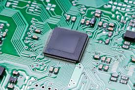
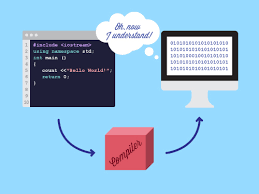
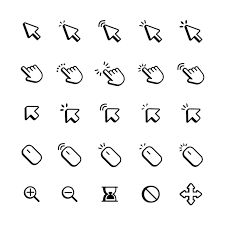

Chat
Comunicación en tiempo real a través de texto entre dos o más personas mediante aplicaciones o plataformas en línea.
Cracker
Persona que vulnera sistemas de seguridad informática con fines maliciosos, como robo de datos o sabotaje, a diferencia de un hacker ético.
Chip
Pequeño circuito integrado fabricado en silicio que contiene transistores y otros componentes electrónicos, utilizado en computadoras y dispositivos electrónicos.
Compilador
Programa que traduce código fuente escrito en un lenguaje de programación a código máquina ejecutable por una computadora.
Comprimir
Reducción del tamaño de un archivo mediante algoritmos de compresión como ZIP o RAR, permitiendo ahorrar espacio y facilitar su transmisión.
Cookie
Pequeño archivo de datos almacenado en el navegador de un usuario por un sitio web, utilizado para recordar preferencias, sesiones y rastrear actividad en línea.
CPU
Unidad central de procesamiento, el componente principal de una computadora que ejecuta instrucciones de programas y realiza cálculos.
Cursor
Indicador visual en la pantalla de una computadora que muestra la posición donde el usuario puede escribir o interactuar con la interfaz.
